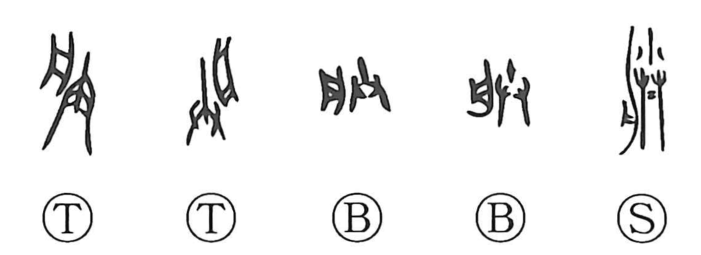

朕

Kun: | On: chin
imperial i ・ omen ・ sign
Explanation
In the oldest forms the graph shows a tray-like vessel with both hands raised beneath it, depicting a person presenting something with both hands; from this came the sense of offering, a configuration that also underlies related characters. In Shang-period inscriptions 朕 appears alongside special style-names of princes such as 子, 余, and 我, and these later came to function as pronouns. Thus 朕 was adopted as the ruler’s self-referential “I,” a usage that, from the Qin unification onward, became the exclusive imperial first person. Apart from this courtly use, the character also carried the older sense of a sign or portent.